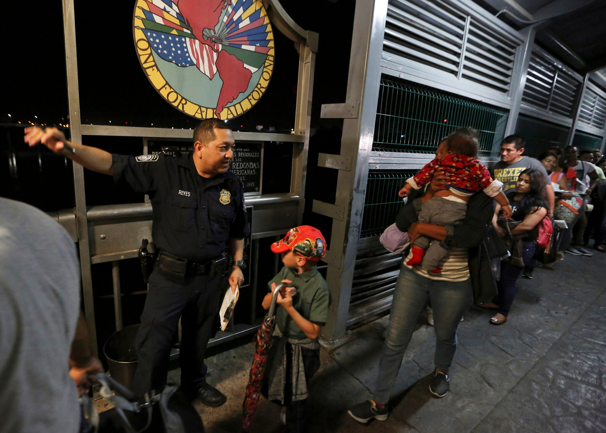

El gobierno de Estados Unidos expulsa a México a niños migrantes de
otros países
Un correo electrónico interno de la Patrulla Fronteriza decía que
las transferencias violaban las políticas del gobierno
estadounidense. Los niños centroamericanos generalmente no tienen
familia que los acoja en México.

Un oficial de la Oficina de Aduanas y Protección Fronteriza de
Estados Unidos guía a los solicitantes de asilo a través del
puente internacional desde Nuevo Laredo, México, hacia Estados
Unidos. Fernando Llano/Associated Press
Las autoridades fronterizas de Estados Unidos han estado expulsando
a México a niños migrantes de otros países, lo que viola
un acuerdo diplomático
con México y desafía los límites de las leyes de inmigración y de
bienestar infantil.
EL TIMES:
Una selección semanal de historias en español que no
encontrarás en ningún otro sitio, con eñes y acentos.
Las expulsiones, que quedan de manifiesto en un correo electrónico
interno muy crítico de un alto funcionario de la Patrulla
Fronteriza, se han producido bajo una
agresiva política de cierre de la frontera
que el gobierno de Donald Trump ha dicho que es necesaria para
evitar que el coronavirus se propague a Estados Unidos. Pero entran
en conflicto con los términos en los que el gobierno mexicano acordó
ayudar a implementar la orden. Según lo acordado, solo los niños
mexicanos y otros menores que contaran con la supervisión de un
adulto podrían ser devueltos a México después de intentar cruzar la
frontera.
Las expulsiones ponen en peligro a niños de países como Guatemala,
Honduras y El Salvador pues los envían a un país en el que no tienen
conexiones familiares sin un adulto que los acompañe. La mayoría de
los menores parecen haber quedado, al menos en principio, al cuidado
de las autoridades de protección infantil de México, que supervisan
los refugios administrados por organizaciones religiosas y otros
grupos privados.
Las expulsiones, que parecen ser más de 200 en los últimos ocho
meses, reflejan la naturaleza azarosa con la que se han introducido
muchas de las políticas de inmigración más agresivas del actual
gobierno estadounidense. En muchos casos, han dado lugar a que haya
niños pequeños transitando entre los organismos gubernamentales de
Estados Unidos y, ahora, entre los gobiernos de países que les son
ajenos. Desde hace años, el manejo de los niños migrantes por parte
del gobierno de Trump ha dejado a miembros de familias separados
durante meses y sin posibilidad de comunicarse.
Un informe presentado a los tribunales a principios de este mes
reveló que no han podido localizarse los padres de 545 de dichos
niños que se encuentran en Estados Unidos, algunos de ellos
separados de sus familias desde 2017.
En virtud de los acuerdos diplomáticos vigentes y de las políticas
de Estados Unidos, se supone que los niños que no sean mexicanos
deben ser trasladados en vuelos operados por el Servicio de Control
de Inmigración y Aduanas (ICE, por su sigla en inglés) a sus países
de origen, donde puedan reunirse con sus familias.
Los rumores de que se está expulsando a México a niños de otros países
han inquietado a los trabajadores de organizaciones sin fines de lucro
que abogan por el bienestar de los niños en México y Estados Unidos.
Pero localizar a estos niños ha resultado difícil debido a los
informes incompletos de las autoridades del gobierno mexicano.
Sin embargo, en un correo electrónico del jefe adjunto de la Patrulla
Fronteriza de Estados Unidos, Eduardo Sanchez, obtenido por The New
York Times, queda claro que tales transferencias no solo han ocurrido,
sino que son una clara violación de la política de Estados Unidos.
“Recientemente, hemos identificado varios casos sospechosos en los que
menores solos [SM, por la sigla en inglés] de países distintos a
México han sido expulsados a través de los puertos de entrada en lugar
de ser remitidos a Operaciones Aéreas de ICE para vuelos de
expulsión”, escribió Sanchez.
En referencia al estatuto federal de salud pública en el que se basa
la política de cierre de fronteras del gobierno, continuó: “Por favor,
tengan en cuenta que, de no corregirse, estas acciones pondrán en gran
peligro las operaciones del Título 42 y deben cesar inmediatamente.
Reiteramos que bajo ninguna circunstancia debe ser expulsado
intencionadamente un SM de otro país que no sea México”.
Niños guatemaltecos a su llegada a Ciudad de Guatemala después de
haber sido deportados de Estados Unidos en 2019. Según los acuerdos
y políticas existentes, se supone que los niños de países distintos
a México deben volver vía aérea a sus países de origen para reunirse
con sus familias. John Moore/Getty Images
Brian Hastings, jefe de la Patrulla Fronteriza del sector del Valle
del Río Grande, reconoció en una entrevista que se habían enviado de
vuelta a México niños que no eran mexicanos.
Hastings dijo que, sin la política de regresar de manera rápida a los
migrantes por las normas de la pandemia, “tendríamos cantidades
masivas de infecciones, cantidades masivas de contacto y, repito,
llenaríamos un hospital”. Dijo que los agentes fronterizos deben
comunicarse con la oficina consular mexicana cada vez que se expulsa a
un menor no acompañado.
Y Mark Morgan, el comisionado en funciones de la Oficina de Aduanas y
Protección Fronteriza, reconoció en una entrevista distinta esta
semana que tales expulsiones violarían un acuerdo entre México y
Estados Unidos. “Eso no forma parte de su política”, dijo Morgan sobre
Méxic
La pandemia del coronavirus
creó una oportunidad
para que el gobierno de Trump promulgara las restricciones fronterizas
más estrictas de su mandato hasta el momento.
Desde entonces, miles de niños han sido expulsados rápidamente
a sus países de origen tras cruzar la frontera con Estados Unidos, lo
que supone un cambio con respecto a las prácticas establecidas durante
años, en virtud de las cuales los niños que viajaban sin tutores eran
transferidos a un sistema de acogida del gobierno estadounidense. Ahí
eran asignados con trabajadores sociales que buscaban reunirlos con
patrocinadores estadounidenses mientras sus casos de asilo llegaban a
los tribunales.
Contrariamente a esa política, los niños expulsados durante la
pandemia fueron retenidos solo brevemente en instalaciones de la
Patrulla Fronteriza o en hoteles antes de ser enviados a sus países de
origen, a menudo sin ninguna notificación previa a las familias.
Algunos han tenido que pedir prestados teléfonos celulares cuando
llegan a los aeropuertos para llamar a los familiares que puedan estar
dispuestos a acogerlos.
Las últimas expulsiones añaden una nueva complicación, tal vez más
devastadora, que crea aún más confusión a las familias de
Centroamérica y otros lugares que pueden estar buscando a sus hijos.
Es posible que algunos niños expulsados hayan tenido familiares en
México que estaban a la espera de entrar en Estados Unidos, pero las
autoridades mexicanas no proporcionaron información sobre los niños
entregados a sus refugios.
Los abogados de la American Civil Liberties Union impugnan la práctica
de expulsar a los niños migrantes en un tribunal federal, al
argumentar que viola las leyes de bienestar infantil, como la Ley de
Protección de Víctimas de Tráfico, así como las leyes nacionales de
inmigración, que requieren protecciones especiales para los menores
que viajan sin la compañía de un adulto.
“Incluso al margen de la ilegalidad general del Título 42, bajo las
leyes de inmigración también resulta ilegal expulsar a un niño no
mexicano a México”, dijo Lee Gelernt, abogado principal del caso.
Recientemente, el gobierno ha comenzado a referirse a los niños
migrantes que cruzan la frontera solos de manera diferente: como
“menor solo” en lugar de “niños extranjeros no acompañados”. El cambio
en el lenguaje refuerza la idea de que mientras siga vigente el cierre
de la frontera relacionado con la pandemia, estos niños no son
susceptibles de recibir las protecciones legales que de otro modo
tendrían a su disposición.
De acuerdo con información pública, las autoridades de Estados Unidos
han expulsado a más de 200.000 personas desde que se puso en marcha el
cierre fronterizo por motivos sanitarios, pero el gobierno no
respondió cuántos de ellos eran menores ni cuántos de ellos fueron
devueltos a México. En diciembre, las autoridades fronterizas
reconocieron en una corte federal que al menos 8800 niños habían sido
expulsados de Estados Unidos desde marzo.
La organización de derechos humanos Women’s Refugee Commission
presentó una solicitud de acceso a la información a las autoridades
mexicanas y recibió datos que sugieren que al menos 208 niños
centroamericanos fueron puestos en custodia de las autoridades
mexicanas entre el 21 de marzo y el 5 de junio de este año.
Las autoridades de protección infantil en México no respondieron a los
pedidos de comentario.
Zolan Kanno-Youngs colaboró con la reportería.
Caitlin Dickerson es reportera para temas de migración, con sede en
Nueva York, y es ganadora de un premio Peabody. Ha escrito
reportajes sobre las políticas de asilo, detención y deportación en
Estados Unidos así como el trato a los niños inmigrantes en custodia
gubernamental.
@itscaitlinhd
Los niños migrantes y la frontera
Los padres de 545 niños separados en la frontera no han podido
ser encontrados22 de octubre de 2020
La confusion de ser repentinamente deportado cuando tienes 10
años22 de mayo de 2020
Caitlin Dickerson is a Peabody Award-winning reporter based in New
York who covers immigration. She has broken stories on asylum,
detention and deportation policy, as well as the treatment of
immigrant children in government custody.
@itscaitlinhd